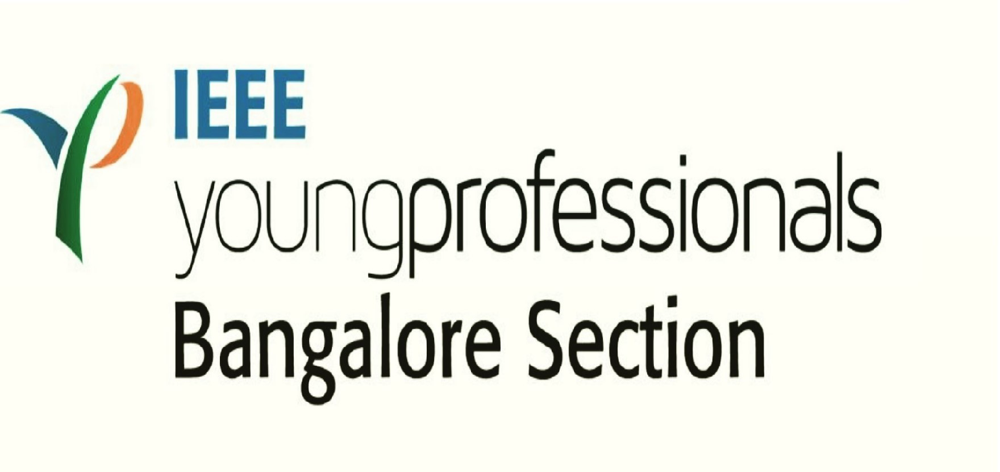

IEEE Young Professionals is an international community of enthusiastic, dynamic, and innovative members and volunteers. IEEE is committed to helping young professionals evaluate their career goals, polish their professional image, and create the building blocks of a lifelong and diverse professional network. Affiliation with IEEE Young Professionals is open to Graduate Students and higher-grade members with early career interests. IEEE Young Professionals provides career advantage resources and helps members leverage the power of the global network through its expanding Affinity Groups and volunteer opportunities. For further information on IEEE Young Professionals please click on yp.ieee.org
IEEE Young Professionals Affinity Group in Bangalore Section was formed in the year 2000. The young professional volunteers from Bangalore Section have stepped up to take larger responsibilities on a global scale such as chairing the IEEE Xtreme committee, IEEE Special Interest Group on Humanitarian Technologies (SIGHT) committee etc. Several volunteers have been awarded with prestigious IEEE awards such as the Young Professional Achievement Award, Outstanding Volunteer Award etc. Volunteer growth and member engagement has been a core focus for IEEE Young Professionals Bangalore Affinity Group.